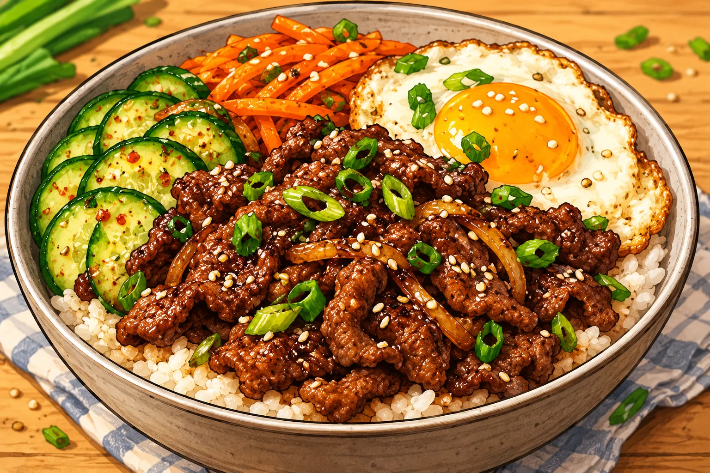

Bœuf coréen façon bulgogi
Une grosse portion maison, simple à préparer, avec des légumes et des protéines.
⏱ 20 min🍽 1 grosse portion💰 ≈ 4–6 €💪 ≈ 54 g protéines≈ 840 kcal
Ingrédients
- 200 g de bœuf haché 5 %
- 90 g de riz cru
- 1 œuf
- 100 g de concombre
- 60 g de carotte
- 20 ml de sauce soja sans poisson
- 10 g de miel
- 1 gousse d’ail
- 5 ml d’huile
- Un peu de gingembre
Préparation
- Lancer le riz dans une casserole.
- Mélanger sauce soja, miel, ail et gingembre dans un bol.
- Faire revenir le bœuf à la poêle 7 à 9 min en l’émiettant. Ajouter la sauce et laisser caraméliser 1 à 2 min.
- Cuire l’œuf au plat dans une autre poêle ou après le bœuf.
- Servir avec le riz, l’œuf, le concombre et la carotte crus.
Conservation et réchauffage
Conserver riz et bœuf séparément des crudités, au maximum 2 jours au frais. Réchauffer viande et riz à cœur.
Nutrition et prix indicatifs : à recalculer selon les marques et quantités dans MyFitnessPal. Les sauces mentionnées sont sans poisson : vérifier les étiquettes.